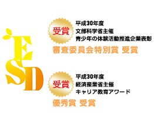

あなたの学校でもリサイクルをやってみよう｡
“届けよう、服のチカラ”プロジェクトとは？
子どもたちが主体となって、着なくなった子ども服を回収して、難民の方々など世界中で服を本当に必要としている人々に届ける活動です。
この活動を通じて、次世代を担う子どもたちが国際問題や環境問題に関心をもつだけでなく、服のチカラを知り、自分にもできる社会貢献があると気づくきっかけになればと思っています。
活動のはじめに、ユニクロ・ジーユーの社員が講師となって服のチカラについて出張授業を行います。その後、子どもたちが校内・地域へ協力を呼びかけ、子ども服を回収・発送します。最後に、難民キャンプに服を届けた様子のフォトレポートを学校にお届けします。



全商品リサイクル活動とは？
お客様からご不要になった商品をお預かりして、まだ着られる服は、難民の方々など世界中で服を必要としている人々へ寄贈し、傷んでもう着られない服は燃料などにリサイクルする活動です。
ユニクロ・ジーユーの全商品を全国のユニクロ・ジーユーの店舗で回収しています。わたしたちは、服のチカラを最大限に活かすために、UNHCR（国連難民高等弁務官事務所）とのグローバルパートナーシップのもと、この「全商品リサイクル活動」に取り組んでいます。